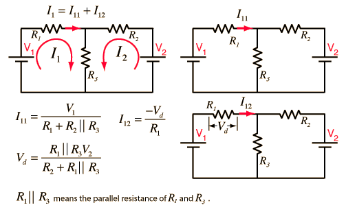

Superposition: Two Loop Problem
To apply the superposition theorem to calculate the current through resistor R1 in the two loop circuit shown, the individual current supplied by each battery is calculated with the other battery replaced by a short circuit.

Note: To avoid dealing with so many short circuits, any resistor with value zero will default to 1 when a voltage is changed. It can be changed back to a zero value if you wish to explore the effects of short circuits. Ohms and amperes are the default units, but if you put in resistor values in kilohms, then the currents will be milliamperes.
|
Index
DC Circuits |